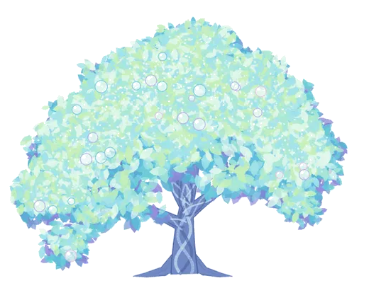

PROFILE
Wang Haixin
佐藤 海来 / 王 海鑫
{{ t.hero_title }}
{{ t.hero_sub }}

{{ publications.length }}+{{ t.stat_pubs }}
6+{{ t.stat_years }}
3{{ t.stat_lang }}
ABOUT{{ t.about_sub }}
{{ t.about_title }}
Wang Haixin / Sato Mirai
王 海鑫 / 佐藤 海来
王 海鑫 / 佐藤 海来
{{ t.bio1 }}
{{ t.bio2 }}
EDUCATION{{ t.edu_sub }}
{{ t.edu_title }}
{{ e.year }}
{{ e.degree }}
{{ e.school }}
{{ e.badge }}
SKILLS{{ t.skills_sub }}
{{ t.skills_title }}
{{ cat.title }}
{{ t.featured_title }}
PUBLICATIONS{{ t.pub_sub }}
{{ t.pub_title }}
INTERESTS{{ t.interests_sub }}
{{ t.interests_title }}
{{ h.emoji }}
{{ h.label }}